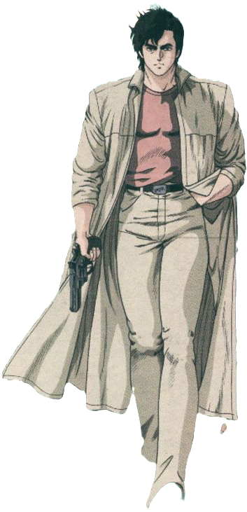

Maîtrise des armes à feu :
Nicky Larson est également habile avec les armes à feu. Si vous envisagez de suivre cette voie, assurez-vous de recevoir une formation adéquate sur la sécurité et le maniement des armes à feu.

Entraînement physique et combat :
Nicky Larson est un expert en arts martiaux et en combat à mains nues. Entraînez-vous régulièrement pour améliorer votre force, votre agilité et vos compétences de combat.
